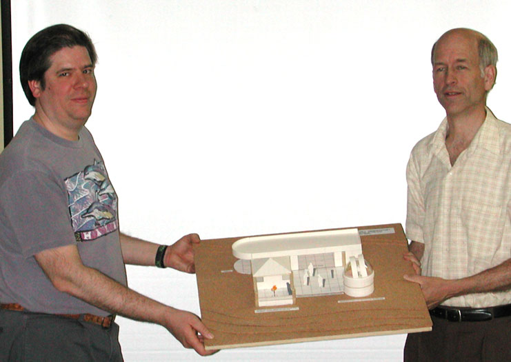

|  |
Larry Lasher is the Pioneer Project Manager for NASA. In his talk "The History of Pioneer 10/11 and the Search for the Heliosphere" he will discuss the history of Pioneer 10/11 missions, the discoveries they made about the solar system, the search for the heliospheric boundaries, and the latest attempts to contact Pioneer 10. June 2nd 8:00 p.m. at the Houge Park Meeting Hall.
Houge (rhymes with "Yogi") Park is in San Jose, near Campbell and Los Gatos. From Hwy. 17, take the Camden Avenue exit. Go east 0.4 miles, and turn right at the light, onto Bascom Avenue. At the next light, turn left onto Woodard Road. At the first stop sign, turn right onto Twilight Drive. Go three blocks, cross Sunrise Drive, then turn left into the park.
From Hwy. 85, take the Bascom Avenue exit. Go north, and turn right at the first traffic light, onto White Oaks Road. At the first stop sign, turn left onto Twilight Drive. You will now be passing the park. Turn right at the first driveway, into the parking lot.
Between the parking lot and tennis courts is a strip of grass where public star parties are held. The meeting hall is directly ahead (south) of the parking lot. There are restrooms on the other side of the the hall.
For directions to observing sites commonly used by SJAA members, visit the SJAA web site: http://www.sjaa.net/directions.html.